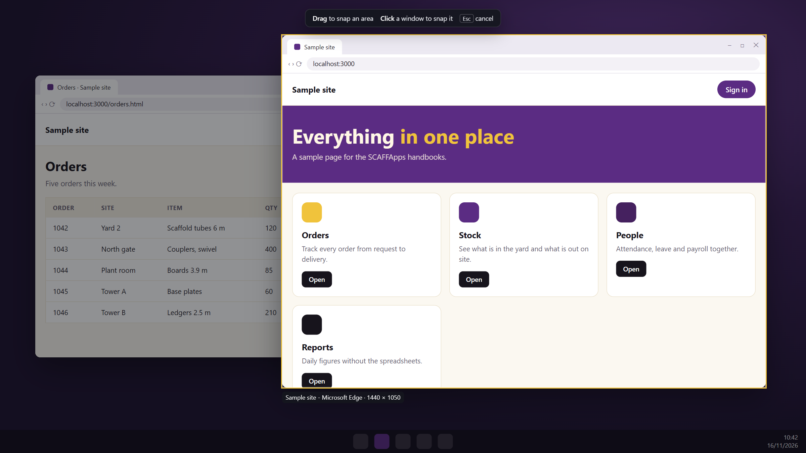
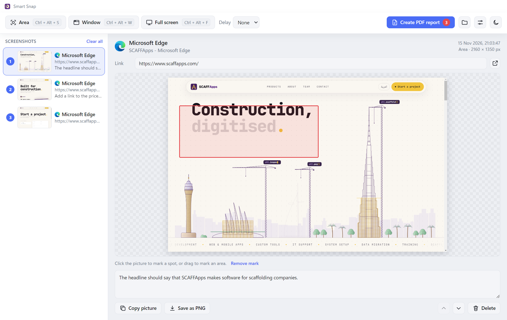
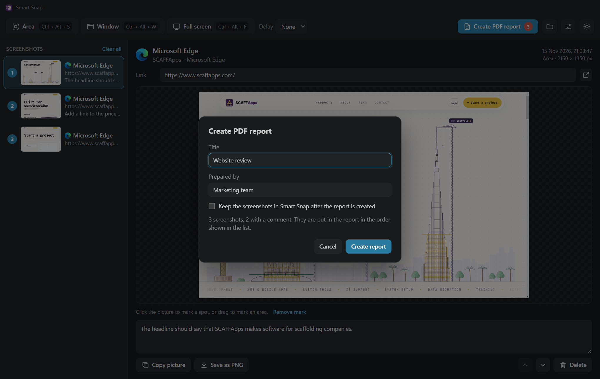
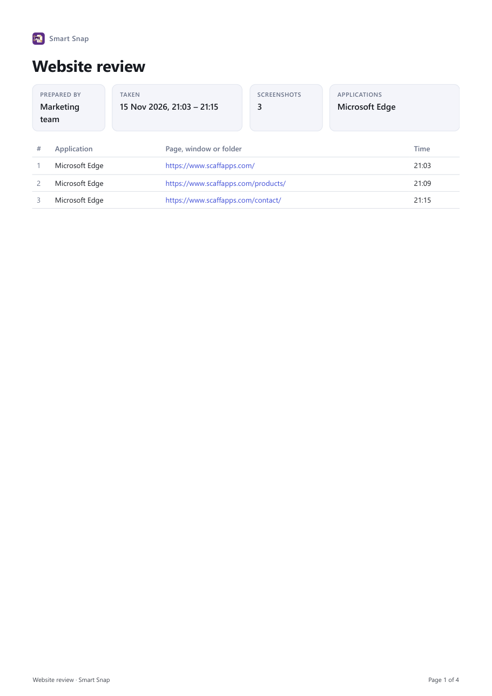
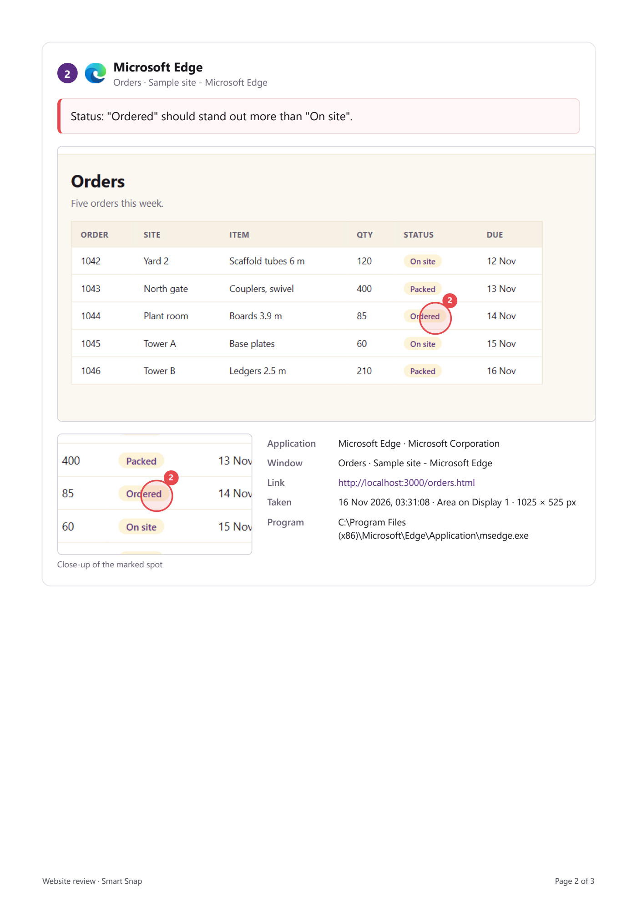

Smart Snap
Handbook
Screenshots that remember where they came from. Every snap records the application, the window and the web page it was taken from. Add a comment, mark what you mean, and hand over one PDF report.
Screenshots that remember where they came from. Every snap records the application, the window and the web page it was taken from. Add a comment, mark what you mean, and hand over one PDF report.
Smart Snap is a screenshot tool for people who report what they see on screen: website reviews, software testing, support cases, site records.
An ordinary screenshot is just a picture. Weeks later nobody remembers which program it came from or which page was open. Smart Snap keeps that with every picture:
Two files are provided on the Releases page of github.com/Rady193/smart-snap. Use whichever suits you.
| File | What it does |
|---|---|
| Smart-Snap-Setup-1.0.2.exe | Installer. Installs for everyone on the computer, in C:\Program Files\Smart Snap unless you choose another folder, so Windows asks for administrator permission once. It adds Start menu and desktop shortcuts, and can be removed later from Windows Settings. |
| Smart-Snap-1.0.2-portable.exe | A single file. Nothing is installed and no administrator permission is needed. Copy it anywhere and double-click it. |
No other software is needed.
Everything Smart Snap saves goes into one folder that you choose:
Documents\Smart Snap.Inside that folder the app keeps two subfolders: Screenshots for pictures saved as PNG, and Reports for PDF reports. The folder button in the top bar opens it.
Smart Snap puts its icon in the tray, next to the clock. Closing the window does not stop it: it keeps running there so the shortcuts work from any program. Click the tray icon to open the window again; right-click it for the menu, which also has Quit.
To have Smart Snap ready every day, tick Start Smart Snap when I sign in to Windows in Settings. It then starts quietly in the tray.

| Part | What it is for |
|---|---|
| Area, Window, Full screen | Take a snap. Each button shows its shortcut. See section 4. |
| Delay | Waits 3, 5 or 10 seconds before the snap, so you can open a menu first. |
| Create PDF report | Turns the snaps into one report. The red number is how many snaps are waiting. |
| Folder | Opens the output folder. |
| Sliders | Settings: output folder, starting with Windows, shortcuts and updates. A red dot means an update is waiting. |
| Sun or moon | Switches between dark and light. |
| Screenshots list | Every snap, numbered in report order, with its application, link and comment. |
| The selected snap | Application, window title and link at the top; the picture; the comment box; and buttons to copy, save, reorder or delete. |
| Kind | Shortcut | What it takes |
|---|---|---|
| Area | Ctrl + Alt + S | Any rectangle you drag, or a window you click. |
| Window | Ctrl + Alt + W | The window you are using, without its shadow. |
| Full screen | Ctrl + Alt + F | The whole display the mouse is on. |
The same three are buttons at the top of the window and items in the tray menu. When you use a button, Smart Snap hides itself first, so it takes the window you were using before, not itself.
The screen freezes and dims, and a short guide appears at the top. As you move the mouse, the window under it is outlined in gold with its name and size.


With more than one monitor, every monitor freezes and you can drag on any of them. A window spread across two monitors is cut at the edge of the one that shows most of it.
At the moment of the snap, Smart Snap asks Windows which window is there and notes the following. It does this by itself; there is nothing to set up.
| Item | Where it comes from |
|---|---|
| Application | The program that owns the window, by the name its maker gives it ("Microsoft Edge", "Excel", "Visual Studio Code"), with its version, company and icon. For an area snap, it is the window in the middle of the area. |
| Window | The window's title, as shown in its title bar or taskbar button. For most programs this names the open document or page. |
| Link | For web browsers, the address in the address bar. Works with Chrome, Edge, Brave, Opera, Vivaldi, Firefox and similar browsers. |
| Folder | For File Explorer, the folder being shown. |
| Taken | Date and time, the kind of snap, the display, and the picture's size in pixels. |
| Program | Where the program's file is, for telling apart two programs with the same name. |
https:// in the address bar. Smart Snap puts it back so the link works. Addresses on your own network (localhost, 192.168.…) get http://. If a link is wrong or missing, correct it in the snap's Link box.Click a snap in the list to work on it. Everything is saved as you go; there is no Save button.
| To | Do this |
|---|---|
| Add a comment | Type in the box under the picture. It appears in the report above the picture. |
| Mark a spot | Click the picture. A red circle is drawn there. |
| Mark an area | Drag on the picture. A red box is drawn. |
| Remove the mark | Choose Remove mark. A new mark also replaces the old one. |
| Fix the link | Type in the Link box. Clear it to leave the link out of the report. The button beside it opens the page. |
| Copy the picture | Copy picture, or Ctrl + C when you are not typing. Paste it into an e-mail or chat. |
| Save the picture | Save as PNG puts it in the Screenshots folder, named after the application and time. |
| Change the order | The up and down arrows move the snap earlier or later in the report. |
| Delete | Delete removes the snap. Clear all above the list removes every snap after asking. |
Use ↑ and ↓ to move through the list.

Snaps are kept until you create a report or delete them, also after closing Smart Snap or restarting the computer. A report can be built up over several days.
Press Create PDF report. A short form asks for:

The report is A4 with numbered pages:
A short website review: three snaps of the SCAFFApps site taken in Microsoft Edge, two with comments and marks.


When the report is ready, choose Open or Show in folder. Reports are saved in the Reports folder.

| Setting | What it does |
|---|---|
| Output folder | Where screenshots and reports are saved. Change… picks another folder; files already saved stay where they are. |
| Start with Windows | Starts Smart Snap in the tray when you sign in. |
| Shortcuts | Lists the three shortcuts. If another program already uses one, it says so here; use the buttons or tray menu for that one. |
| Updates | The version you have, and new versions. See below. |
Smart Snap asks GitHub for a newer version a few seconds after it starts and once a day while it runs. Only the version number is asked for: nothing about you or your snaps is sent, and nothing is downloaded until you choose to.
Untick Check for updates automatically to stop the automatic checks.
| Keys | Where | Action |
|---|---|---|
| Ctrl + Alt + S | Anywhere | Snap an area or a window |
| Ctrl + Alt + W | Anywhere | Snap the window in front |
| Ctrl + Alt + F | Anywhere | Snap the full screen |
| Esc or right-click | Choosing an area | Cancel |
| Enter | Choosing an area | Take the whole display |
| ↑ ↓ | Smart Snap window | Previous or next snap |
| Ctrl + C | Smart Snap window | Copy the picture |
| What | Where |
|---|---|
| Pictures saved as PNG | Screenshots in your output folder |
| PDF reports | Reports in your output folder |
| Snaps waiting for a report | %APPDATA%\Smart Snap\snaps |
| Settings | %APPDATA%\Smart Snap\settings.json |
Deleting %APPDATA%\Smart Snap resets the app and deletes snaps not yet reported. Reports already created are not affected.
| What you see | What to do |
|---|---|
| "Windows protected your PC" on first run | Choose More info, then Run anyway. The app is not code-signed. |
| A shortcut does nothing | Check that Smart Snap is in the tray. Settings says if another program holds the shortcut. |
| The wrong application is recorded | For an area snap, the window in the middle of the area counts. For a window snap, click the window first. |
| No link for a web page | The browser may be unusual or busy. Type the address into the Link box. |
| The application name or icon is missing | The program may be running as administrator. The picture is still taken. |
| Old snaps appear in a new report | Snaps stay until reported or deleted. Delete them first, or use Clear all. |
| You cannot find a picture or report | Press the folder button in the top bar. |
Smart Snap 1.0.2, published by SCAFFApps. This handbook describes that version.